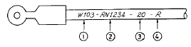
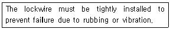
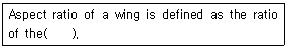

항공기관정비기능사 (2003-01-26 기출문제)
1과목: 비행원리
1. 비행기의 속도가 200㎞/h이다. 상승각이 6° 이면 상승률은 약 몇 ㎞/h 인가?
- 12 .4
- 18 .7
- 20 .9
- 60.2
(정답률: 71%)

2. 비행기의 필요마력(Hp)을 구하는 식으로 옳은 것은? 단, D : 항력(kgf), V : 속도(m/sec), T : 이용추력(kgf)
- Pr =TV/75.
- Pr =DV/75.
- Pr = 75TV
- Pr = 75DV
(정답률: 72%)
3. 피치 업(PITCH UP)이 발생될 수 있는 원인이 아닌 것은?
- 뒤젖힘 날개의 날개끝 실속
- 뒤젖힘 날개의 비틀림
- 승강키 효율의 증가
- 날개의 풍압중심이 앞으로 이동
(정답률: 66%)
4. 오토자이로가 헬리콥터처럼 공중에서 할 수 없는 비행의 종류는?
- 전진비행
- 하강비행
- 상승비행
- 정지비행
(정답률: 82%)
5. 입구의 지름은 10㎝이고 출구의 지름은 20㎝인 원형관에 액체가 흐르고 있다. 지름이 20㎝ 되는 단면적에서의 속도가 2.4㎧일때, 지름 10㎝ 되는 단면적에서의 속도는 몇 [㎧]인가?
- 9.6
- 6.9
- 8.3
- 2.08
(정답률: 75%)
6. 날개의 뒷전에 출발와류가 생기게 되면 앞전 주위에도 이것과 크기가 같고 방향이 반대인 와류가 생기는 것은?
- 속박와류
- 날개 끝 와류
- 말굽형 와류
- 유도 와류
(정답률: 73%)
7. 타원날개의 경우, 양력계수가 CL = 0.3√π 이며, 가로 세로비 A=6 인 경우 유도항력 계수는?
- 0.015
- 0.⑤
- 0.15
- 0.5
(정답률: 46%)
8. 방향키만 조작하거나 옆미끄럼 운동을 하였을 때 빗놀이와 동시에 옆놀이 운동이 생기는 현상은?
- 관성 커플링(Inertia coupling)
- 날개드롭(Wing drop)
- 슈퍼실속(Super stall)
- 공력 커플링(Aerodynamic coupling)
(정답률: 62%)
9. 고도가 높은 고공에서 공기 밀도가 감소하면 이용마력은 어떻게 변화하는가?
- 증가한다.
- 감소한다.
- 변화없다.
- 감소 후 증가한다.
(정답률: 62%)
10. 수직 꼬리 날개와 동체 상부에 장착하여 방향 안정성을 증가 시키기 위한 것은?
- 실속 스트립(stall strip)
- 볼텍스 발생장치(vortex generator)
- 슬롯(slot)
- 도살 핀(dorsal fin)
(정답률: 93%)
11. 안정성이 가장 좋은 비행기는?
- 높은 날개(High wing) 비행기
- 중간 날개(Mid wing) 비행기
- 낮은 날개(Low wing) 비행기
- 높은 날개 비행기가 아니면 안정성은 대체로 좋은 편이다.
(정답률: 58%)
12. 다음중 무동력 항공기는?
- 비행선
- 자이로다인
- 오토자이로
- 활공기
(정답률: 73%)
13. 충격파에 의해서 생기는 항력으로 날개면상에 초음속 흐름이 형성되면 발생되는 항력은?
- 형상항력
- 간섭항력
- 조파항력
- 램항력
(정답률: 83%)
14. 날개에 쳐든각을 주는 가장 큰 이유는 무엇인가?
- 날개끝 실속을 방지하기 위해서
- 옆놀이의 안정성 향상을 위해서
- 선회성능을 좋게 하기 위해서
- 날개저항을 적게 하기 위해서
(정답률: 63%)
15. 동축 역회전식 회전날개 헬리콥터에 대한 설명으로 가장 올바른 것은?
- 두 개의 회전날개에서 발생되는 토크는 서로 상쇄 된다.
- 동일한 축에 두 개의 주회전 날개를 부착시키므로 조종기구가 간단해진다.
- 기체의 높이를 매우 낮게 할 수 있다는 점이 장점이다.
- 조종성이 나쁘고 주회전 날개에 의해 발생되는 양력도 작은 것이 특징이다.
(정답률: 81%)
16. 다음 설명 중에서 틀린 것은?
- 항공기 정비의 목적은 감항성, 정시성 및 쾌적성을 유지시키는데 있다.
- 항공기 정비는 크게 보수, 수리, 제작의 3가지로 분류할 수 있다.
- 사용가능 부품에 사용되는 표찰(TAG)의 색깔은 노란색(YELLOW)이다.
- 운항으로 소비되는 액체 및 기체류의 보충을 의미하는 용어는 보급(SERVICING)이다.
(정답률: 65%)
17. 오버홀 정비와 같은 수준의 점검은?
- A점검
- B점검
- C점검
- D점검
(정답률: 78%)
18. 항공기에 사용되는 전선은 그림과 같이 전선피복에 표시되어 있는 기호로서 전선의 굵기와 전선이 사용되는 계통을 알 수 있다. 올바른 것은?

- 림:항공기 계통기능
- 립:전선뭉치 번호
- 릿:전선의 굵기
- 링:연결된 계기
(정답률: 74%)
19. 두장의 두께가 다른 알루미늄 판을 리벳팅(REVETING)할 경우 리벳트(RIVET)의 머리는 일반적으로 어느쪽에 두어야 하는가?
- 두꺼운 판쪽
- 얇은 판쪽
- 어느쪽이건 상관없다.
- 적당한 공구를 사용하면 어느쪽이라도 상관없다.
(정답률: 45%)
20. 보어스코프의 용도로서 가장 적당한 것은?
- 외부 결함의 관찰
- 내부 결함의 관찰
- 외부의 측정
- 내부의 측정
(정답률: 81%)
2과목: 항공기정비
21. 항공기 날개의 내부구조를 검사하는데 가장 적절한 비파괴 검사방법은?
- X-Ray 검사
- 초음파검사
- 형광침투검사
- 와전류검사
(정답률: 74%)
22. 물펌프 소화기는 어떤 화재에 사용되는가?
- A급
- B급
- C급
- D급
(정답률: 92%)
23. 항공정비 작업중 안전결선에 관한 안전 및 유의사항으로 틀린 것은?
- 신체부위가 와이어에 찔리지 않도록 주의한다.
- 와이어를 꼴 때는 팽팽한 상태가 되도록 한다.
- 와이어를 자를 때는 자른면이 직각 되도록 한다.
- 사용이 깨끗한 결선용 와이어는 다시 사용한다.
(정답률: 95%)
24. 충돌, 추락, 전복 및 이에 유사한 사고의 위험이 있는 장비 및 시설물에 칠하는 안전 색채는?
- 붉은색
- 노란색
- 녹색
- 오렌지색
(정답률: 75%)
25. 다음 영문의 prevent 부분의 내용으로 가장 올바른 것은?

- 느슨하게
- 단단하게
- 손상
- 방지
(정답률: 67%)
26. 다음 ( )안에 알맞는 말은?

- wing span to the wing root
- square of the chord to the wing span
- wing span to the mean chord
- wing span to the wing span
(정답률: 74%)
27. 염색침투 탐상법보다 미세한 결함도 탐지가 가능하며, 정확도는 높으나, 검사시 자외선등이 필요한 검사는?
- 자분탐상 검사
- 형광 침투탐상 검사
- 초음파 검사
- 육안 검사
(정답률: 76%)
28. 6각형,12각형으로 볼트나 너트를 조이거나 푸는데 사용하며 사용할 때 볼트나 너트의 헤드 부위가 망가지지 않는 공구는?
- 박스 렌치
- 오픈엔드 렌치
- 조합 렌치
- 플라이어 렌치
(정답률: 64%)
29. 토큐렌치를 사용할 때 틀린 내용은?
- 지시서에 규정된 토큐치를 준다.
- 토큐시 절삭유를 나사산에 바르고 작업한다.
- 연장공구는 필요시 사용 가능하다.
- 사용후 공구는 제자리에 갖다 놓는다.
(정답률: 87%)
30. 항공기 접지에 대한 설명으로 옳지 못한 것은?
- 격납고에 들어갈 때에는 반드시 접지를 하여야 한다.
- 급유나 배유시 반드시 접지를 하여야 한다.
- 항공기 정비작업시는 반드시 접지를 하여야 한다.
- 항공기 자체에 접지장치가 있으면 별도의 접지를 할 필요가 없다.
(정답률: 85%)
31. 다음은 어댑터(adaptor)의 설명이다. 가장 적합한 것은?
- 크기가 서로 다른 핸들(handle)과 어태치 먼트(attachment)를 연결할 때 사용한다.
- 핸들(handle)의 길이를 늘릴 때 사용한다.
- 핸들(handle)의 양끝에 똑같은 힘을 가할때 사용한다
- 크기가 서로 같은 핸들(handle)과 어태치 먼트(attachment)를 연결할 때 사용한다.
(정답률: 60%)
32. 감독자의 책임과 가장 관계 먼 것은?
- 새로운 장비를 인수하였거나, 작업방법이 지시되었을 때에는 교육을 실시한다.
- 모든 작업자들이 규정된 절차에 따라서 일을 할 수 있도록 이끌어 주고, 독촉해야 한다.
- 불안전한 요소를 보고 받았거나 발견시에는 해당 작업자에게 그에 해당하는 제지를 가한다.
- 사용되고 있는 안전장비 및 이에 부수되는 자재들을 지원해야 한다.
(정답률: 34%)
33. 항공기 정비규정의 내용에 포함되지 않는 것은?
- 정비작업의 항목
- 정비작업의 중요성
- 정비작업의 실시시기
- 정비작업의 실시조건
(정답률: 65%)
34. 비가요성 케이블로 7개의 와이어를 엮어 하나의 케이블로 구성한 것은?
- 7× 19 케이블
- 7× 7 케이블
- 1× 19 케이블
- 1× 7 케이블
(정답률: 65%)
35. 판재(t=0.064 inch 이하)를 성형할 때 균열을 방지하기 위해 릴리프홀(relief hole)을 뚫는다. 이 때 릴리프홀 지름의 기준값은 얼마정도 인가?
- 1/8in
- 1/4in
- 1/2in
- 1in
(정답률: 67%)
36. 가역 사이클의 하나인 카르노 사이클(Carnot cycle)에 대한 설명중 가장 올바른 것은?
- 두개의 단열과정과 두개의 등적과정으로 형성된다.
- 두개의 단열과정과 두개의 등온과정으로 형성된다.
- 두개의 등적과정과 단열과정 및 등온과정으로 형성된다.
- 두개의 등온과정과 단열과정 및 등적과정으로 형성된다.
(정답률: 62%)
37. 저압 마그네토 계통에서 스파크 플러그가 점화하기에 필요한 전압은 어디에서 공급되는가?
- 마그네토 1차코일
- 마그네토 2차코일
- 각 실린더 근처에 설치된 변압 코일
- 배전기
(정답률: 43%)
38. 왕복기관에서 실린더 안의 연소가 가장 잘 이루어지는 연소실의 모양은?
- 원뿔형
- 도움형
- 삼각형
- 반구형
(정답률: 77%)
39. 크랭크 축의 변형이나 비틀림 진동(TORSION)을 막아주기 위하여 무엇을 사용하는가?
- 카운터 웨이트
- 다이내믹 댐퍼
- 스테이틱바란스
- 바란스 웨이트
(정답률: 86%)
40. 제트기관에서 터빈 깃의 냉각방식에 속하지 않는 것은?
- 대류냉각
- 각막냉각
- 충돌냉각
- 침출냉각
(정답률: 67%)
3과목: 항공기관
41. 연소실의 구조가 간단하고 길이가 짧으며 연소실 전면 면적이 좁고 연소가 안정되므로 연소정지 현상이 없고 출구온도 분포가 균일하며 연소효율이 좋으나 정비가 불편한 결점을 갖는 연소실 형은?
- 축류형(axial type)
- 애뉼러형(annular type)
- 원심류형(centrifugal type)
- 캔형(can type)
(정답률: 85%)
42. J47기관에 사용되는 압축기는?
- 8단 축류형
- 8단 원심형
- 12단 축류형
- 12단 원심형
(정답률: 47%)
43. 가스터빈 엔진(gas turbine engine)에서 연료 트림(fuel trim)이란?
- 엔진의 정해진 회전(R.P.M)에서 정격추력을 내도록 연료조정장치(F.C.U)를 조정하는 것이다.
- 엔진(engine)의 회전수(R.P.M)를 조정하는 것이다.
- 엔진(engine)의 압력비를 조절하는 것이다.
- 엔진(engine)의 배기를 조절하는 것이다.
(정답률: 53%)
44. 가스터빈 기관의 용량형 점화계통에서 바이브레터에 의해 직류를 교류로 바꾸어 사용하는 고에너지 점화장치는?
- 직류고전압 용량형
- 직류저전압 용량형
- 교류고전압 용량형
- 교류저전압 용량형
(정답률: 54%)
45. 배기밸브는 과도한 열에 노출되기 때문에 내열 재료로서 중공으로 되어있다. 중공의 내부에는 무엇을 채워 열을 잘 방출시키도록 하는가?
- 물
- 헬륨
- 수소
- 금속나트륨
(정답률: 74%)
46. 플로우트식 기화기에서 플로우트실의 연료수준과 분사 노즐의 수준과의 관계는?
- 플로우트실의 연료수준이 분사노즐 수준보다 높아야 한다.
- 플로우트실의 연료수준과 분사노즐 수준은 같아야 한다.
- 플로우트실의 연료수준이 분사노즐 수준보다 낮아야 한다.
- 플로우트실의 연료수준과 분사노즐 수준과는 관계 없다.
(정답률: 48%)
47. 증기폐색(Vapor lock)을 가장 옳게 나타낸 내용은?
- 연료의 기화성이 좋지 않을 때 나타난다.
- 연료의 기화성이 좋을 때 연료파이프에 열을 받으면 나타난다.
- 연료의 압력이 연료의 증기압보다 압축비를 크게 했을 때 나타난다.
- 연료의 압력이 연료의 증기압보다 클 때 나타난다.
(정답률: 47%)
48. 가스터빈 기관에서 터빈깃의 미세한 결함은 어떤 작업에 의해 수리가 가능한가?
- 리벳팅 작업
- 조인트(Joint) 작업
- 블렌딩(Blending)작업
- 범핑(Bumping)작업
(정답률: 70%)
49. 왕복기관을 금속용기내에 저장보관할 때 습도는 항상 몇 [%]이하로 유지해야 하는가?
- 40
- 50
- 60
- 70
(정답률: 49%)
50. 0-470-11 왕복기관에서 "11"은 무엇을 의미하는가?
- 실린더의 수
- 제작 고유번호
- 기관의 일련번호
- 기관의 개량번호
(정답률: 27%)
51. 가스터빈기관 공기흡입도관으로 공기가 초음속으로 흡입될 때 도관의 단면적과 공기속도와의 관계를 바르게 설명한 것은?
- 단면적 감소에 따라 속도감소, 단면적 증가에 따라 속도 증가한다.
- 단면적 감소에 따라 속도증가, 단면적 증가에 따라 속도 감소한다.
- 단면적 감소에 따라 속도증가후 감소, 단면적 증가에 따라 속도감소후 증가한다.
- 초음속 도관에서는 단면적과 공기속도와의 관계가 없다.
(정답률: 55%)
52. 축류식 압축기의 1단당 압축비가 3 이고 압축기가 4단으로 되어 있다면 압력비는?
- 12
- 27
- 81
- 243
(정답률: 47%)
53. 속도 360㎞/h로 비행하는 항공기에 장착된 터보제트 기관이 196㎏/s인 중량 유량의 공기를 흡입하여 200㎧의 속도로 배기시킬 경우 총추력은 몇[㎏]인가?
- 1000
- 2000
- 3000
- 4000
(정답률: 49%)
54. 가스터빈 기관의 출력에 가장 큰 영향을 미치는 요소로 되어 있는 것은?
- 공기밀도, 비행고도, 비행속도의 영향
- 공기밀도, 비행고도, 연료압력의 영향
- 공기속도, 비행고도, 연료압력의 영향
- 공기속도, 비행고도, 비행속도의 영향
(정답률: 39%)
55. 왕복기관에서 피스톤 링의 역할로서 가장 관계가 먼 것은?
- 실린더 벽에 윤활유를 공급한다.
- 피스톤의 열을 실린더에 전달한다
- 가스의 누설을 방지한다.
- 피스톤에 작용하는 압력을 커넥팅로드에 전달한다.
(정답률: 57%)
56. 노킹 발생과 관계 없는 것은?
- 연료의 성질
- 배기 가스 온도
- 공기 연료 혼합비
- 압축비
(정답률: 55%)
57. 어떤 기관의 피스톤 지름이 130mm, 행정 거리가 140mm, 실린더 수가 4, 제동 평균 유효 압력이 6.5 Kgf/cm2, 회전수가 2000rpm일 때에 제동 마력은 얼마인가?
- 107.3(PS)
- 117.3(PS)
- 127.3(PS)
- 137.3(PS)
(정답률: 33%)
58. 가스터빈 기관 중에서 배기가스에서 추력을 얻는 추력 발생 기관으로 짝지어진 것은?
- 터보 제트 기관, 터보 프롭 기관
- 터보 샤프트 기관, 터버 팬 기관
- 터보 제트 기관, 터보 팬 기관
- 터보 프롭 기관, 터보 샤프트 기관
(정답률: 67%)
59. 열역학에 있어서 계와 주위를 구분하여 주는 것은?
- 작동 물질
- 경계(Boundary)
- 에너지
- 열
(정답률: 62%)
60. 가스터빈 기관의 기본적인 연료 계통에 대한 순서로 가장 올바른 것은?
- 주연료 펌프-연료조정장치-여압 및 드레인 밸브-연료 매니폴드-연료 여과기-연료 노즐
- 주연료 펌프-여압 및 드레인 밸브-연료 여과기-연료조정장치-연료 매니폴드-연료 노즐
- 주연료 펌프-연료 여과기-연료 매니폴드-연료조정장치-여압 및 드레인 밸브-연료 노즐
- 주연료 펌프-연료 여과기-연료조정장치-여압 및 드레인 밸브-연료 매니폴드-연료 노즐
(정답률: 63%)
상승률은 다음과 같은 공식으로 계산할 수 있다.
상승률 = 비행기의 속도 × sin(상승각)
여기서 비행기의 속도는 200㎞/h이고, 상승각은 6°이다. 따라서 상승률은 다음과 같이 계산할 수 있다.
상승률 = 200 × sin(6°) ≈ 20.9
따라서 정답은 "20.9"이다.